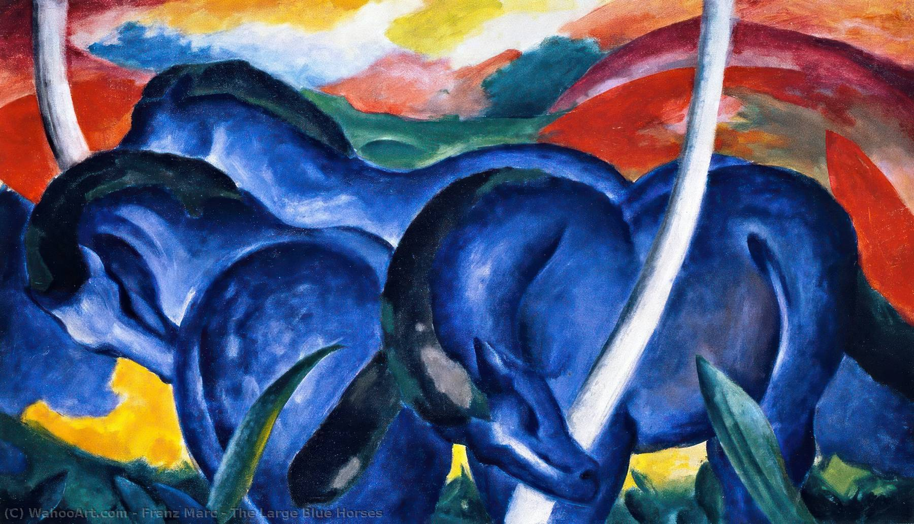

Os Grandes Cavalos Azuis
Artista: Franz Marc
Ano: 1911
Descrição:A pintura mostra três cavalos azuis em harmonia com a paisagem, cores intensas e formas simplificadas. Para Marc, os animais representavam pureza e espiritualidade, e o azul simbolizava força e masculinidade.